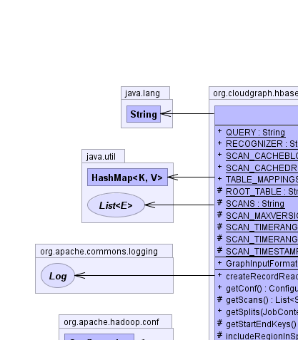
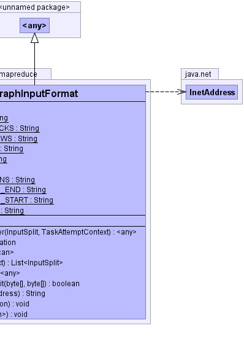

public class GraphInputFormat extends
readers for each split which assemble and serve data graphs to client mapper extensions.
Data graphs are assembled within a record reader
based on the detailed selection criteria within a given query, and may
be passed to a recognizer and potentially
screened from client mappers potentially illuminating
business logic dedicated to identifying specific records.
A graph recognizer is used only when query expressions are present which reference properties not found in the row key model for a target graph.
org.apache.hadoop.hbase.mapreduce.TableSplit,
GraphRecordReader,
GraphRecordRecognizer|  |  |
| Modifier and Type | Field and Description |
|---|---|
static java.lang.String |
QUERY
Serialized query which encapsulates meta data which drives the creation is
one or more scans against any number of tables, starting with the root.
|
static java.lang.String |
RECOGNIZER
Boolean property indicating whether a graph recognizer is necessary for the
current query
|
protected static java.lang.String |
ROOT_TABLE
Internal Job parameter that specifies root the input table as derived from
a deserialized query
|
static java.lang.String |
SCAN_CACHEBLOCKS
Set to false to disable server-side caching of blocks for this scan.
|
static java.lang.String |
SCAN_CACHEDROWS
The number of rows for caching that will be passed to scanners.
|
protected static java.lang.String |
SCAN_MAXVERSIONS
The maximum number of version to return.
|
protected static java.lang.String |
SCAN_TIMERANGE_END
The ending timestamp used to filter columns with a specific range of
versions.
|
protected static java.lang.String |
SCAN_TIMERANGE_START
The starting timestamp used to filter columns with a specific range of
versions.
|
protected static java.lang.String |
SCAN_TIMESTAMP
The timestamp used to filter columns with a specific timestamp.
|
protected static java.lang.String |
SCANS
Internal Job parameter that specifies the scan list.
|
static java.lang.String |
TABLE_MAPPINGS
Serialized store mappings or configuration which links physical tables with
any number of data graphs/mappings.
|
| Constructor and Description |
|---|
GraphInputFormat() |
| Modifier and Type | Method and Description |
|---|---|
|
createRecordReader(InputSplit split,
TaskAttemptContext context) |
Configuration |
getConf() |
protected java.util.List<Scan> |
getScans()
Allows subclasses to get the list of
Scan objects. |
java.util.List<InputSplit> |
getSplits(JobContext context) |
protected |
getStartEndKeys() |
protected boolean |
includeRegionInSplit(byte[] startKey,
byte[] endKey)
Test if the given region is to be included in the InputSplit while
splitting the regions of a table.
|
java.lang.String |
reverseDNS(java.net.InetAddress ipAddr)
Uses
InetAddress in case of DNS lookup failure. |
void |
setConf(Configuration configuration) |
protected void |
setScans(java.util.List<Scan> scans)
Allows subclasses to set the list of
Scan objects. |
public static final java.lang.String QUERY
public static final java.lang.String TABLE_MAPPINGS
CloudGraphConfiguration which may have any number of table mapping
elements.public static final java.lang.String RECOGNIZER
protected static final java.lang.String SCANS
protected static final java.lang.String ROOT_TABLE
protected static final java.lang.String SCAN_TIMESTAMP
protected static final java.lang.String SCAN_TIMERANGE_START
protected static final java.lang.String SCAN_TIMERANGE_END
protected static final java.lang.String SCAN_MAXVERSIONS
public static final java.lang.String SCAN_CACHEBLOCKS
public static final java.lang.String SCAN_CACHEDROWS
public Configuration getConf()
public void setConf(Configuration configuration)
public java.util.List<InputSplit> getSplits(JobContext context)
throws java.io.IOException,
java.lang.InterruptedException
java.io.IOExceptionjava.lang.InterruptedExceptionpublic java.lang.String reverseDNS(java.net.InetAddress ipAddr)
throws javax.naming.NamingException,
java.net.UnknownHostException
InetAddress in case of DNS lookup failure.javax.naming.NamingExceptionjava.net.UnknownHostExceptionipAddr - the addressprotectedgetStartEndKeys() throws java.io.IOException
java.io.IOExceptionpubliccreateRecordReader(InputSplit split, TaskAttemptContext context) throws java.io.IOException, java.lang.InterruptedException
java.io.IOExceptionjava.lang.InterruptedExceptionprotected boolean includeRegionInSplit(byte[] startKey,
byte[] endKey)
This optimization is effective when there is a specific reasoning to
exclude an entire region from the M-R job, (and hence, not contributing to
the InputSplit), given the start and end keys of the same.
Useful when we need to remember the last-processed top record and revisit
the [last, current) interval for M-R processing, continuously. In addition
to reducing InputSplits, reduces the load on the region server as well, due
to the ordering of the keys.
Note: It is possible that endKey.length() == 0 , for the last
(recent) region.
Override this method, if you want to bulk exclude regions altogether from
M-R. By default, no region is excluded( i.e. all regions are included).
startKey - Start key of the regionendKey - End key of the regionprotected java.util.List<Scan> getScans()
Scan objects.protected void setScans(java.util.List<Scan> scans)
Scan objects.scans - The list of Scan used to define the inputCloudGraph® is a registered trademark of TerraMeta Software, Inc. Copyright © 2014 - All Rights Reserved.